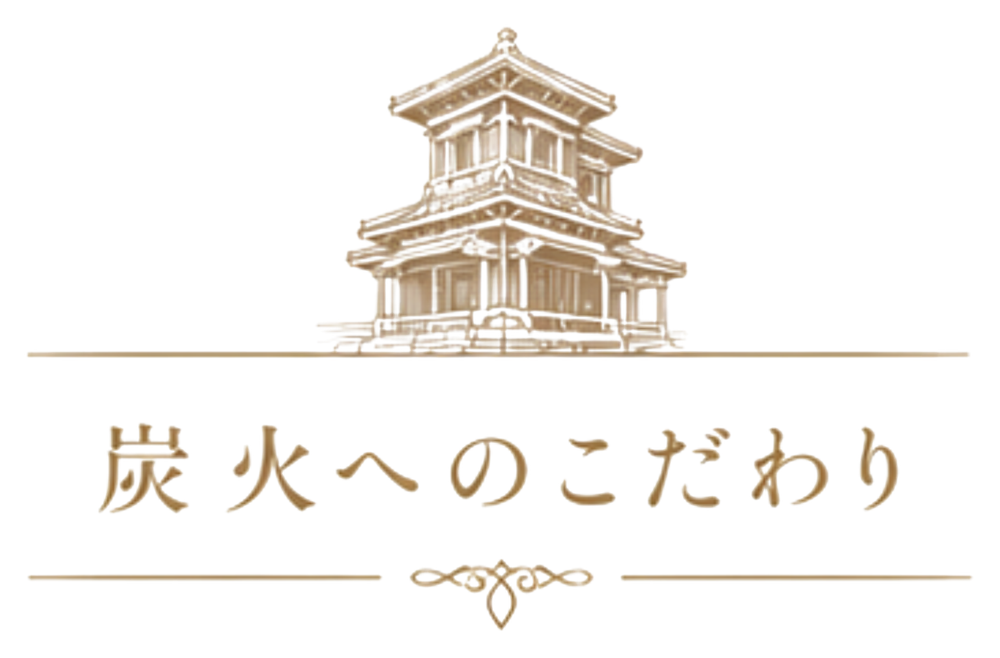
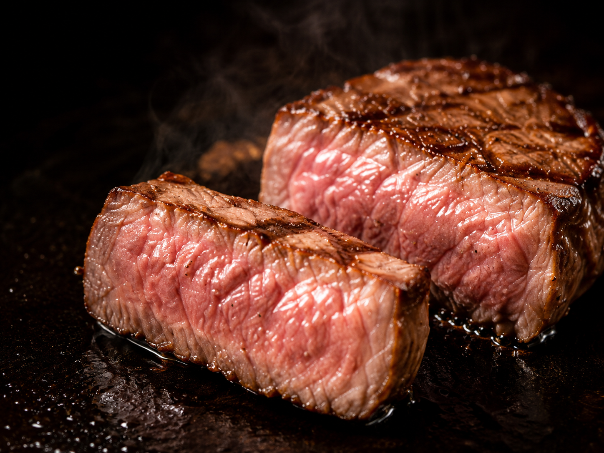
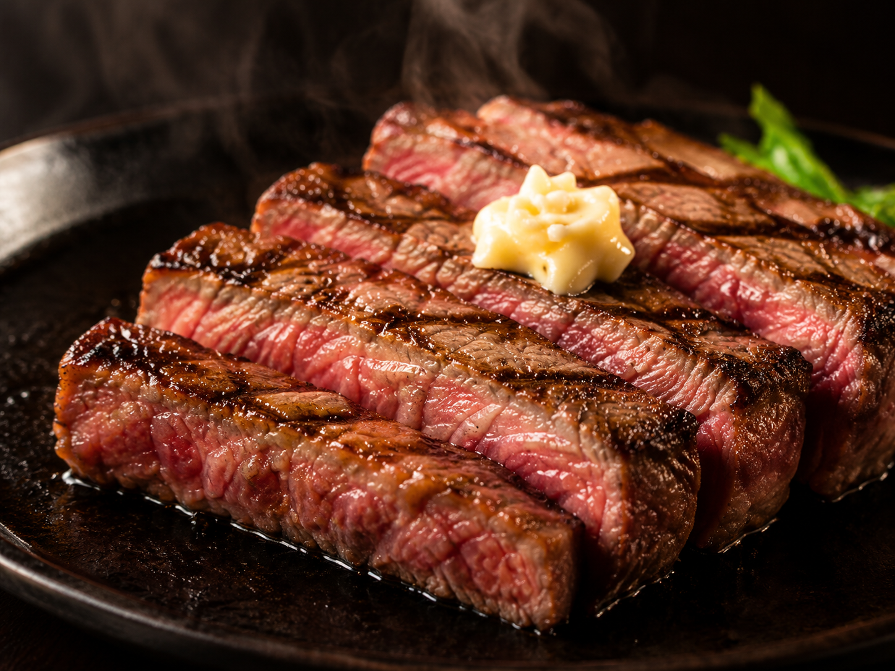
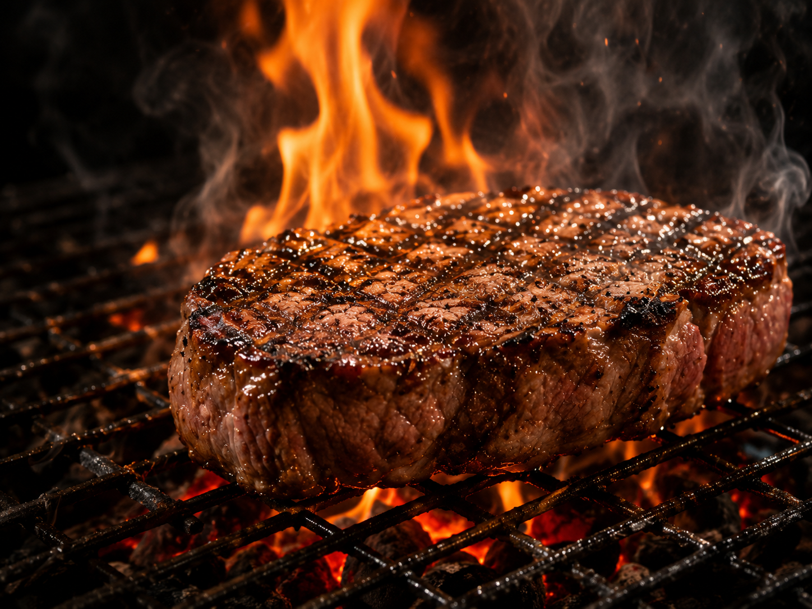

埼玉・川越 炭火グリルステーキ
食べた記憶ではなく、 焼けた瞬間を、 持って帰ってほしい。
炭の音、香り、牛脂が一滴落ちて炎が立つ一瞬。
GRILL STEAK FAMILIAは、その記憶を焼く店です。
2026.7.7 NEW OPEN
思
OMOI — 思想
炭火の記憶が残る店。
産地や等級だけでステーキを語るのは、もうやめにしました。
グレード、熟成、厚み。そして火を入れる炭そのもの。
FAMILIAが焼くのは肉ではなく、その場に残る記憶です。

炭
SUMI — 二種の炭
裏で支え、表で記憶を焼く。
FAMILIAは二種類の炭を使い分けます。
指で触れて、それぞれの炭に何が起きているかを見てください。
肉
NIKU — 肉へのこだわり
グレード × 熟成 × 厚み。



宴
EN — 宴のメニュー
看板から、〆まで。
席
SEKI — どの席で食べるか
家族でも、二人でも、ひとりでも。
家族の席
子どもと囲む、はじめての炭火。
仲間の席
炭の音を肴に、長く居たくなる夜。
特別な席
炎の前で、記念日を焼く。
蔵
KURA — 店の場所
GRILL STEAK FAMILIA
- 所在地
- 埼玉県川越市新富町2-12-34
- 営業時間
- 11:00–15:00（L.O.14:30）
17:00–22:00（L.O.21:30） - 定休日
- 火曜日（祝日の場合は営業、翌日休み）
- 駐車場
- あり（30台）
- 席数
- テーブル席・カウンター席 68席
●
川越駅より車で約6分